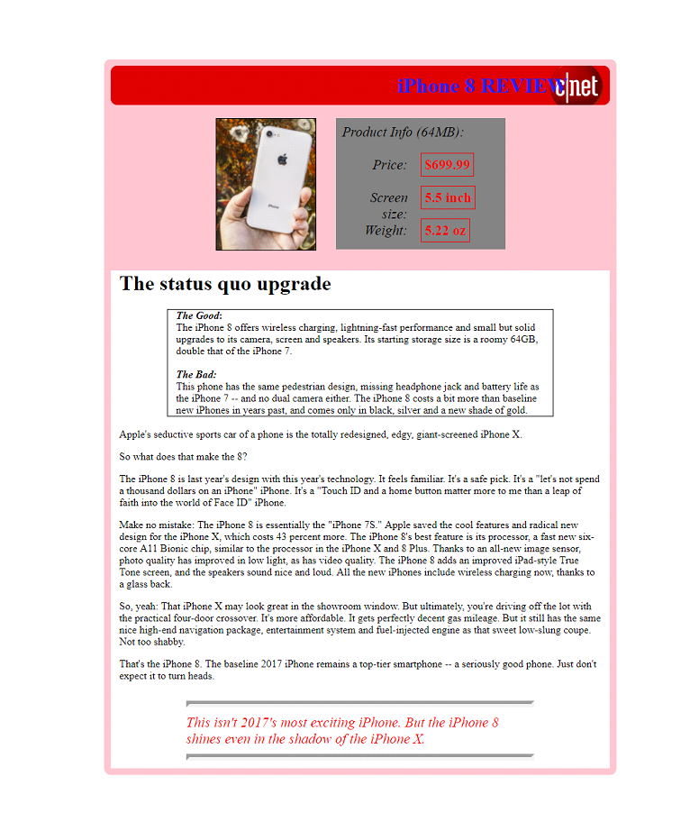

Week 4: Assignment #04
Practice Practical HTML Exam
DUE: Tuesday, 2/7 @ 5pm
Take each element from the list below and save them on a folder on your computer. Then recreate the news article on
this page using those elements.
- iphone8.txt (article text and extra instructions)
- iphone8.png (product photo)
- cnet.png (media logo)
- Try to pay attention to details such as spacing and alignments. Do NOT worry about specific line breaks (at what word a paragraph starts a new line in the middle of a paragraph), but otherwise you should duplicate other formatting (text appearance, breaks between paragraphs, background color regions, etc.). For the purposes of the layout assume the outer box is about 800 pixels wide but you do NOT need to worry about where the outer box is on the page (left or center aligned). And anywhere on the mock-up where there are colors you can use any general color.
- The first thing you should do is save your exam as “lastname_firstname.html” (for example, “siegel_aaron.html”) inside the exam folder.
- In grading this part of the test, I will be looking at your source code, viewing the pages through a web browser, using the developer tools as well as the W3C HTML validator.
- In the html practical exam you can implement CSS styles through inline styles (inside a tag), through a stylesheets (internal or external), or a combination of both.
- Take care to finish as much of the exam as you can. There are some parts of the practical that may be more challenging for you than others, so if you get stuck, try to complete the easier or more general parts -- do the basic layout, style formatting, etc. -- and then come back to the harder parts. I would suggest sketching out the layout and basic “boxes” first, then flowing in the content, then doing all of the fine tuning and detail work.
- Pay attention to details in the page: changes in text style and size, margins and spacing, areas that are filled with color, etc.
- The actual practical examination will be similar in function and structure to this exercise, although it may have different elements (could other elements not included in this sample, from form elements to css properties).

Upload your completed assignment by the due date specified above and make sure that you add a working link to it on your class page, otherwise it will not be reviewed and you will not receive credit. If you expect to be late submitting an assignment, you need to email the instructor and grader prior to the deadline to notify them of the late submission, then later follow up once your assignment has been completed, uploaded, and linked from your class page. The latest a late assignment can be submitted is a week after its original due date.
{kind=link}